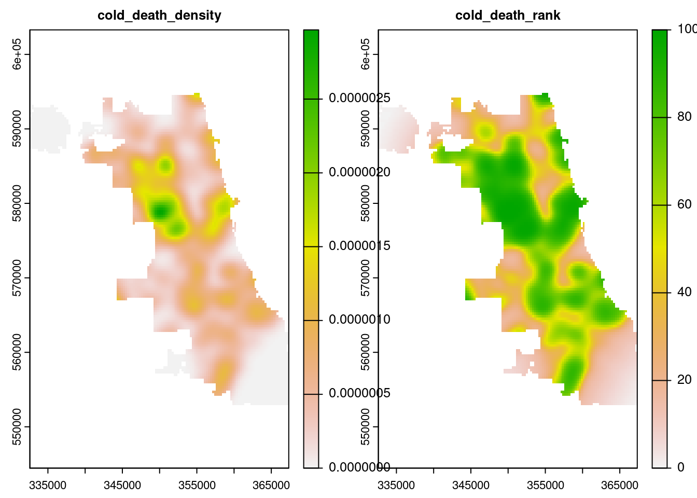

library(tidyverse) # Data Manipulation
library(sf) # Simple features manipulation
library(terra) # Raster manipulation
library(tidyterra) # Helper functions for terra
library(spatstat) # Point patter analysis
library(tmap) # MappingIntroduction
Cook County Health and Housing Forward’s Recuperation in Supportive Environment (RISE) Center cares for people experiencing homelessness as they become well enough to discharge from a hospital, but still need a stable home environment in which to medically recover. RISE provides both basic medical services from 24-hr medical assistants and social services from case managers. In winter months, RISE Center experiences a strong uptick in clients admitted due to frostbite and other cold-related injuries. Often these clients have newly amputated digits or limbs, which robs them of independence with their activities of daily living. These injuries are consequences of societal policies that do not adequately prioritize protection and care for people experiencing homelessness.
One means of mitigating the threat of cold weather is to provide warming centers. The City of Chicago designates facilities like libraries, community centers, senior centers, and police stations as available when temperatures dip lower than 32 degrees Fahrenheit “for all residents in need of safe refuge and relief from extreme cold weather.” The objective of this analysis was to compare the locations of hypothermic deaths investigated by the Cook County Medical Examiner (CCME) to locations of warming centers. Are there geographic gaps where a significant number of deaths have taken place, but there are no warming facilities nearby?
Data Description
I obtained data from multiple sources. The outcome of interest was incidence of cold-related deaths, the location of which were obtained from the CCME Case Archive (“Medical Examiner Case Archive,” n.d.). Locations of warming centers were obtained from The City of Chicago (Levy 2017).
Methodology
The analysis was conducted with the R programming language (R Programming Language, n.d.). Data was cleaned and joined using the {tidyverse} suite of packages for core data wrangling (Tidyverse R Package Suite, n.d.), the {sf} package for simple feature data (Edzer Pebesma, n.d.), and {terra} for raster data (Robert J. Hijmans et al., n.d.). Kernel density estimation was performed using {spatstat} (Adrian Baddeley, Rolf Turner, and Ege Rubak, n.d.). Data was mapped using {tmap} (Tennekes, n.d.).
Further steps are described in the analysis section.
Analysis
First, load the needed packages in R.
Next, read in the needed data and clean it:
chicago_border <-
# Parse from geojson file
st_read(here::here("data", "chicago_border.geojson")) |>
# Transform to "NAD83/Illinois East" projection
st_transform(26971)
chicago_comm_areas <-
# Parse from geojson file
st_read(here::here("data", "chicago_community_areas.kml")) |>
# Transform to "NAD83/Illinois East" projection
st_transform(26971) |>
# Change to title case for text in the "community" variable
mutate(
community = str_to_title(community)
) |>
# Drop all variables but "community"
select(community)
cold_deaths <-
# Parse geojson file
st_read(here::here("data", "Medical_Examiner_Case_Archive,_2014_to_present.geojson")) |>
# Filter for cold-related deaths
filter(COLD_RELATED == "YES") |>
# Filter for geotagged cases
filter(!is.na(latitude) & !is.na(longitude)) |>
# Filter for cases taking place in Chicago proper
filter(INCIDENT_CITY == "CHICAGO") |>
# Transform to "NAD83/Illinois East" projection
st_transform(26971)
warming_centers <-
# Parse csv file
read_csv(here::here("data", "Warming_Centers_-_Map.csv")) |>
# Extract coordinates data nested within the "LOCATION" variable
separate(
LOCATION,
sep = "\n",
into = c("street", "city_state_zip", "coords")
) |>
# Remove parentheses from coordinates data
mutate(coords = str_remove_all(coords, "[\\(\\)]")) |>
# Separate longitude and latitude into distinct variables
separate(
coords,
sep = ",",
into = c("lat", "long")
) |>
# Convert longitude and latitude from characters to numeric variables
mutate(
lat = as.numeric(lat),
long = as.numeric(long)
) |>
# Convert dataframe into simple features collection
st_as_sf(coords = c("long", "lat")) |>
# Set CRS as WGS84
st_set_crs(4326) |>
# Transform CRS to NAD83/Illinois East projection
st_transform(26971)Next, in order to visualize areas of high risk, I have created the following user-defined function to generate kernel density estimation (KDE) rasters using a smoothing bandwidth of 1 km:
wrangle_point_density <- function(points_sf, border_sf) {
# Convert simple feature points to "planar point pattern" data class
ppp1 <- as.ppp(points_sf)
# Set Chicago border as the window for the point pattern
Window(ppp1) <- as.owin(border_sf)
kde1 <-
# Perform kernel density estimation
density(ppp1, 1000) |>
# Convert to raster data class
rast()
# Reset projection
crs(kde1) <- "epsg:26971"
return(kde1)
}Next, perform KDE on cold deaths and warming centers respectively.
cold_deaths_kde <-
# Generate kernel density estimation for cold deaths
wrangle_point_density(cold_deaths, chicago_border) |>
# Rename kde variable
rename(cold_death_density = lyr.1) |>
# Tranform kde variable to percentile rank
mutate(cold_death_rank = percent_rank(cold_death_density) * 100)
warming_centers_kde <-
# Generate kernel density estimation for warming centers
wrangle_point_density(warming_centers, chicago_border) |>
# Rename kde variable
rename(warming_center_density = lyr.1) |>
# Tranform kde variable to (reverse) percentile rank
mutate(warming_center_rank = percent_rank(desc(warming_center_density)) * 100)Here is a quick and dirty comparison plot between the raw density calculation and its conversion into percentile ranks for cold deaths.
plot(cold_deaths_kde)
Next, here is a prettier visualization of just the percentile ranks for cold-death density with the cold death cases overlaid on top:
# Set to static maps mode in the tmap package
tmap_mode("view")
# Map Chicago border
tm_shape(chicago_border) +
tm_borders() +
# Add cold death density raster with blue color scheme and opacity of 0.7
tm_shape(cold_deaths_kde$cold_death_rank) +
tm_raster(
palette = "Blues",
title = "Percentile Rank",
alpha = 0.7
) +
# Add cold death points with pop-up information
tm_shape(cold_deaths) +
tm_dots(
# Choose variables displayed in pop-up bubble
popup.vars = c("INCIDENT_DATE", "MANNER", "PRIMARYCAUSE", "AGE", "GENDER", "RACE", "LATINO")
) +
# Add a title
tm_layout(
title = "Density of Cold-Related CCME Cases, <br> Cook County, IL, 2014-2022"
)Next, is the equivalent map for warming centers, but note I have reversed the percentile ranks such that areas of lowest density have highest rank. This is so higher numbers translate to higher risk both for cold deaths and warming centers. To make this more intuitive, I have set the color scheme in this map such that blue regions correspond to “cold” places with lower density of warming centers, and yellow regions correspond to “warm” regions with higher density of warming centers.
# Map Chicago border
tm_shape(chicago_border) +
tm_borders() +
# Add warming center density raster with plasma color scheme and opacity of 0.7
tm_shape(warming_centers_kde$warming_center_rank) +
tm_raster(
palette = "-plasma",
title = "Reverse Percentile Rank",
alpha = 0.7
) +
# Add warming center points with pop-ups
tm_shape(warming_centers) +
tm_dots(
col = "black",
popup.vars = c("SITE NAME", "SITE TYPE", "HOURS OF OPERATION", "ADDRESS", "CITY", "STATE", "ZIP", "PHONE")
) +
# Add a title
tm_layout(
title = "Reverse Density of Warming Centers, <br> Cook County, IL, 2017"
) Next, lets multiply the two rankings together such that high values of the product correspond to problem areas where there are relatively high amounts of cold-related deaths and low proximity to warming centers.
composite_risk <-
# Combine rasters for warming center and cold death percentile ranks
c(warming_centers_kde$warming_center_rank, cold_deaths_kde$cold_death_rank) |>
# Create composite variable
mutate(composite_risk = warming_center_rank * cold_death_rank / 100) |>
# Drop all other variables
select(composite_risk)And finally, let’s map the composite risk (darker colors are “cold”/higher risk) with cold deaths (blue) and warming centers (red) overlaid on top.
# Map composite risk raster with magma color scheme and opacity of 0.7
tm_shape(composite_risk) +
tm_raster(
palette = "-magma",
alpha = 0.7,
title = "Composite Percentile Rank"
) +
# Add Chicago Community Areas with hovertext labels and transparent fills
tm_shape(chicago_comm_areas) +
tm_polygons(alpha = 0) +
# Add cold death points colored blue with pop-up text
tm_shape(cold_deaths) +
tm_dots(
col = "blue",
popup.vars = c("INCIDENT_DATE", "MANNER", "PRIMARYCAUSE", "AGE", "GENDER", "RACE", "LATINO")
) +
# Add warming center points colored red with pop-up text
tm_shape(warming_centers) +
tm_dots(
col = "red",
popup.vars = c("SITE NAME", "SITE TYPE", "HOURS OF OPERATION", "ADDRESS", "CITY", "STATE", "ZIP", "PHONE")
) +
# Add a title
tm_layout(
title = "Combined Risk from High Density of Cold Deaths (blue) <br> and Low Density of Warming Centers (red)"
) Discussion
This exploratory analysis identified areas of the city at risk of cold deaths based on density calculations of where deaths had taken place previously and where warming centers were present to mitigate.
Kernel density estimation can be somewhat less reliable when used at the edges of a sampling window, so I put less weight into these areas. The highest risk areas not on edges of the Chicago border included the neighborhoods of Belmont-Cragin/Hermosa, Humboldt Park, the Lower West Side, New City, Chicago Lawn, (West) Englewood, Greater Grand Crossing, Chatham, Roseland, and West Pullman. These neighborhoods tended to be in the West or South regions of the city as a whole.
Limitations
There are limitations to this preliminary analysis. First, proximity to a warming center has not been causally established to mitigate risk of cold deaths. One would need to perform a regression analysis while controlling for confounding/colliding variables to determine whether such a mitigating relationship indeed existed. Furthermore, it is possible that physical proximity to a warming center in Euclidean space may be less informative of a measure than “travel time” to a warming center by some means of accessible transportation like public bus or train. Although there are services available to calculate travel time, these services cost money, especially when trying to calculate isochronic surfaces across the whole city to multiple points.
Conclusions
A high degree of cold-related morbidity and mortality persisted in the city of Chicago despite the presence of a large number of publicly-available warming centers. If trying to expand the presence of warming centers, planners should consider prioritizing the neighborhoods listed above on the South and West Sides. Public Health practitioners should also consider alternative interventions like increasing education about preexisting centers and expanding access to permanent housing for those experiencing homelessness.
References
Adrian Baddeley, Rolf Turner, and Ege Rubak. n.d. Spatstat: Spatial Point Pattern Analysis, Model-Fitting, Simulation, Tests. https://cran.r-project.org/web/packages/spatstat/index.html.
Levy, Jonathan. 2017. “Warming Centers.” Chicago Data Portal. https://data.cityofchicago.org/Health-Human-Services/Warming-Centers-Map/5a76-tqs9.
“Medical Examiner Case Archive.” n.d. Cook County Medical Examiner’s Office. https://datacatalog.cookcountyil.gov/Public-Safety/Medical-Examiner-Case-Archive/cjeq-bs86.
Robert J. Hijmans, Roger Bivand, Edzer Pebesma, and Michael D. Sumner. n.d. Terra: Spatial Data Analysis. https://cran.r-project.org/web/packages/terra/index.html.
Tennekes, Martijn. n.d. Tmap: Thematic Maps in R (version 3.3). https://r-tmap.github.io/tmap/.